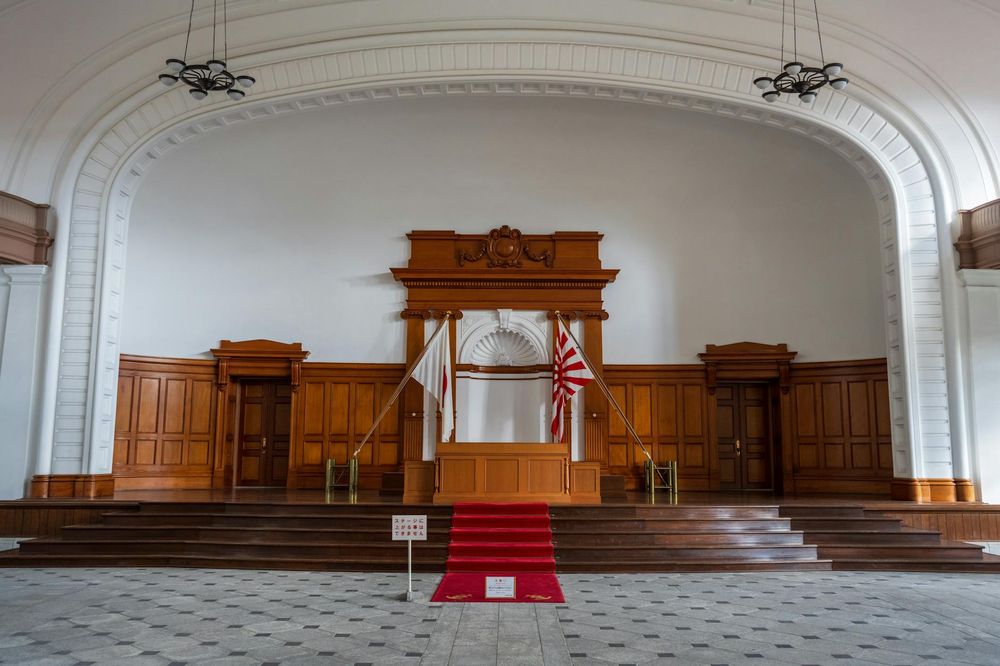

一、5 月 25 日上午 11:30，圣议会大厅
圣议会大厅（Synod Hall）这个场所，平时是召开世界主教代表会议（Synod of Bishops）用的，每三年开一次，2024 年那次开到 10 月 27 日。能租到这个厅的活动级别，按梵蒂冈的内部排序，仅次于圣彼得广场和宗座大殿。教皇本人到场，配几位枢机主教并坐，这种规格上一次给世俗议题用是 2014 年——若望保禄二世的《Laudato Si'》环境通谕。
5 月 25 日上午 11 点 30 分发布会开场，台上五个座位：教皇 Leo XIV 居中；左一是教义部部长 Víctor Manuel Fernández 枢机主教；左二是促进整体人类发展部部长 Michael Czerny 枢机主教（耶稣会神父）；右一是英国杜伦大学神学教授 Anna Rowlands；右二是 Anthropic 联合创始人、可解释性研究负责人 Christopher Olah。
「可解释性研究负责人」是 Olah 在 Anthropic 内部的官方头衔。这个研究方向的工作内容简单说是：在一个已经训练完成的大模型里，把里面的神经元和电路反向解出来，搞清楚模型在做特定推理时哪些回路在亮、哪些权重在传——给模型这个黑箱开外科手术。Olah 2014 年从 Google Brain 出来，先做 Distill 期刊，再去 OpenAI 带可解释性小组，2021 年和 Dario Amodei 等人离开 OpenAI 一起创建 Anthropic。在 Anthropic 七位联合创始人里，他是少数几个完全不碰商业线、只做基础研究的。
梵蒂冈选他不选 Dario Amodei 这件事本身是有说法的。三周前的 5 月 4 日，Pope Leo XIV 在他和 J.D. Vance 副总统的一次受邀会面里，第一次公开把 AI 议题放进个人日程——那次会面是闭门，会后梵蒂冈通讯部发的稿子里写了一句「the Holy Father expressed his concern about emerging technologies, particularly artificial intelligence」。教皇关切，但他不想给一家 AI 公司的 CEO 站台。Olah 是「研究员级别」的代表，比 CEO 政治负重轻，但又是这家公司的联合创始人，是可以代表 Anthropic 立场而又不让通谕变成商业站台的最优解。
而梵蒂冈为什么挑 Anthropic，不挑 OpenAI、Google、xAI——National Catholic Reporter 在 5 月 18 日发布会预告稿里写得很直接：「Anthropic is currently suing the Trump administration after it ordered all U.S. agencies to stop using Anthropic's technology for its refusal to allow the U.S. military unrestricted use of it.」一家因为拒绝让美军不受约束使用 AI 而被联邦政府起诉的 AI 公司——这个故事天然就和「AI 必须被解除武装」的通谕主题对得上。
教皇签字这一份通谕的日期是 5 月 15 日，这一天是 1891 年 5 月 15 日 Leo XIII 发表《Rerum Novarum》（《新事》）通谕 135 周年。Rerum Novarum 当年解决的是工业革命的核心冲突——资本与劳动的关系，给天主教社会教义定了私有财产权、劳动者尊严、公平工资、工会权利等几条基本格律。Leo XIV 把签字时间精确放在 Rerum Novarum 135 周年纪念日，是用日期本身在说一句话：Rerum Novarum 对工业革命做的事，Magnifica Humanitas 要对人工智能革命再做一遍。
这不是一份普通的通谕。它是按梵蒂冈最高级别的「社会教义文件」标准发布的，将进入天主教官方文献档案，将由全球 14 亿天主教徒所在的每一个堂区在未来一年陆续宣讲，将被神学院列为必读。
它的对手是谁？台上右二坐的那位。

二、教皇 83 页骂的是什么
《Magnifica Humanitas》全文 83 页，分四章。每一章都有一句金句被外媒挑出来转。把这四句逐字摆在这里：
第一章关于 AI 与人之尊严，金句是：
「Artificial intelligence is not, and must never become, the new measure of the human person.」
人工智能不是、也绝不能成为衡量人的新尺度。这一句翻译过来意思是：你不许用 AI 的产出力（productivity）来定义一个人是不是有用。这一句本质是给后面所有论证打底——一旦否定了 AI 作为衡量尺度，「AI 让你失业」这件事就不再是技术问题，而是公共道德问题。
第二章关于 AI 与权力，金句是：
「AI must serve humanity, not the powerful few who shape it.」
AI 必须服务于人类，而不是塑造它的少数权贵。这一句话直接喊到点子上。教皇在这一章里点名（虽然没用公司名）批评 AI 发展「concentrated in a handful of wealthy nations and corporations」——集中在少数富国和富公司手里。这一段话被英语外媒挑出来反复转，因为它精确瞄准了硅谷头部 AI 公司目前的市值集中度——OpenAI、Anthropic、xAI、Google DeepMind 四家加起来的私募估值已经超过 3 万亿美元。
第三章关于 AI 与战争，金句是开篇引用过的那一句「AI 必须被解除武装」——但完整段落的措辞更狠：
「The growing ease with which autonomous weapons systems can be deployed makes war more 'feasible' and less subject to human control. The use of AI in warfare must be subject to the most rigorous ethical constraints, to guarantee respect for human dignity and the sanctity of life and to avoid a race to develop such arms.」
自主武器系统部署越来越容易，让战争变得更「可行」、更脱离人类控制。AI 在战争中的使用必须受最严格的伦理约束，以确保对人之尊严和生命神圣性的尊重，并避免发展此类武器的军备竞赛。这一段背后的引用线很长——2024 年加沙战争中以色列国防军被披露用的 Lavender 和 Where's Daddy 两个 AI 目标推荐系统、2025 年俄乌战争中乌军大规模部署 AI 视觉识别的无人机蜂群、2026 年 4 月美军在叙利亚一次空袭中第一次官方披露 AI 协助决策——通谕这段话不是空对空。
第四章关于教会和人类的姿态，金句是：
「The Church asks pardon for its delayed condemnation of slavery; we will not make the same mistake with artificial intelligence.」
教会为它在奴隶制问题上的迟到谴责请求宽恕；我们不会在人工智能问题上重复这个错误。这一句的重量需要解释——天主教会作为机构在历史上和奴隶制的关系是复杂的，多个教皇通谕（如 1839 年 Gregory XVI 的《In Supremo Apostolatus》）虽然谴责过奴隶贸易，但教会内部对奴隶制本身的全面谴责被批评为太晚太软。Leo XIV 在这一段里主动认错并把 AI 类比奴隶制——这意味着 Magnifica Humanitas 在教义层面把「AI 失控发展」放在了和「奴隶制」同等的伦理位置上。
四句话拼起来的逻辑是这样：一、AI 不能定义人；二、AI 不能集中于少数；三、AI 不能用于战争而无约束；四、教会这次不准备再迟到。
通谕里还有一句话在英语外媒里没怎么传，但放在天主教社会教义的整个传统里读重量很大——「the just war theory is increasingly outdated in the age of autonomous systems」，正义战争理论在自主系统时代越来越过时。教会从奥古斯丁、阿奎那一脉传下来的「正义战争」理论体系是西方军事伦理的基本格律，包括北约的交战规则在内的现代战争法理都和它有传承关系。Leo XIV 把这套理论判定为「过时」，等于在 catholicism 内部为「全面反对自主武器」开了教义出口。
这 83 页骂得很全：骂集中、骂战争、骂迟到、骂少数人主宰多数人。
但骂完之后教皇怎么处理坐在他右边那个人——还是要回到 Olah 的发言。
三、Olah 在台上说了什么
Olah 上台之前，主持流程的是教义部部长 Fernández 枢机。教皇念完通谕里关于 AI 与战争那一章，Fernández 起身，介绍下一位发言人。流程上的次序很讲究——枢机主教在前，神学教授（Anna Rowlands）在中，Olah 排在最后。把唯一一个非天主教徒的世俗 AI 公司联合创始人放在最后说话，是天主教仪式语言里默认的强位——这个安排意味着 Olah 的发言被放在「对通谕的回应」位置上，而不是「与通谕并列」的位置上。
Olah 的发言被 Anthropic 第二天在公司新闻稿里以「Chris Olah's remarks on Pope Leo XIV's encyclical "Magnifica humanitas"」为题完整发布。这一份发言稿全长不到 2000 字，分四段。逐字看每一段说了什么。
第一段开篇：
「Every frontier AI lab operates inside a set of incentives and constraints that can sometimes conflict with doing the right thing. I have spent my career working on AI safety because I believe these systems will be among the most powerful artifacts humanity ever creates. The choices we make in the next few years will shape what kind of civilization we hand to our children.」
每一家前沿 AI 实验室都活在一套有时会与做正确的事相冲突的激励和约束里。我把整个职业生涯花在 AI 安全上，因为我相信这些系统将是人类创造过的最强大的器物之一。我们未来几年的选择，将决定我们交给下一代的是什么样的文明。
这一段话翻译过来——他在台上代表 Anthropic、当着 14 亿天主教徒的精神领袖、当着全球直播——主动承认「每一家前沿 AI 实验室的激励有时会和做正确的事冲突」。这是公开的、有视频存档的、由可解释性研究负责人这个职务级别的人做出的承认。这一句话上一次出现在 AI 圈是 2023 年 OpenAI 内部那场宫斗的余波里，Helen Toner 在听证会上说过类似的话。区别是 Toner 当时是离任董事，Olah 现在是在职联合创始人。
第二段是最被外媒引用的一段：
「We need more of the world — religious communities, civil society, scholars, governments — to do what His Holiness has done here: to take this seriously, to look closely, and to push events in a better direction. The development of frontier AI cannot be left to frontier AI labs.」
我们需要更多的世界——宗教共同体、公民社会、学者、政府——来做教皇陛下今天做的事：认真对待、仔细审视、把事情朝更好的方向推。前沿 AI 的发展，不能被留给前沿 AI 实验室。
最后一句「The development of frontier AI cannot be left to frontier AI labs」单独拿出来翻成中文就是「不能让前沿 AI 实验室决定前沿 AI 的发展方向」。这是 Anthropic 创始团队级别的人，公开承认这家公司——一家这一周正在 close 300 亿融资 9000 亿估值、ARR 500 亿、占据全球前沿 AI 产业 1/4 头部产能的公司——不应该自己决定它在做的事的发展方向。
这一句话如果是巴勒斯坦大学某个匿名研究员在 X 上发的，没人会转。这一句话是 Olah 在教皇旁边说出来的，所以它会被收进未来的 AI 治理史。
第三段关于劳动：
「There is a real possibility that AI will displace human labor at very large scale. If that happens, supporting those displaced will be a moral imperative of historic proportions. We need governments, civil society and the private sector together preparing for that possibility now, not after the fact.」
有一种真实的可能性，AI 会大规模替代人类劳动。如果那发生，支持那些被替代的人将是一种历史性规模的道义责任。我们需要政府、公民社会和私营部门现在就为这种可能性做准备，而不是事后补救。
这一段话本质是 Anthropic 自己承认了 AI 大规模替代劳动的可能性，并且把责任划到了「政府、公民社会、私营部门」三方共担。Anthropic 在这之前发过若干份关于 AI 经济影响的研究报告，但都在保留性表述「可能造成结构性失业」「需要进一步研究」的语态上。在台上 Olah 说的话比公司任何官方报告都直接——「a real possibility」「at very large scale」「moral imperative of historic proportions」。
第四段收束：
「Anthropic was founded on the conviction that powerful AI should be developed with extreme care. That conviction is more, not less, urgent today. We are grateful to His Holiness for this encyclical, and we will engage with it seriously.」
Anthropic 创立于一个信念：强大的 AI 应该以极大的谨慎来开发。这个信念在今天比过去更紧迫，而不是更不紧迫。我们感谢教皇陛下发布这份通谕，我们会认真对待它。
发言完整 2000 字内做了四件事：承认实验室激励有冲突；呼吁实验室之外的力量监督；承认大规模失业的真实可能；感谢通谕并承诺认真对待。从公关学的角度，这是一份近乎完美的发言——把所有教皇骂的话先自己说一遍，把公司放在「被监督的对象」位置而不是「监督者」位置，把责任划到了「政府/公民社会/私营部门」三方共担而不是单独承担。
但从产业现实的角度，这一份发言里没有任何一个动作承诺。没有说「Anthropic 将 X 年内捐出 Y 亿美金做监督基金」、没有说「Anthropic 同意第三方审计」、没有说「Anthropic 接受国际治理框架」。全部是描述性的、没有一条是承诺性的。
更刺眼的是发言时间——5 月 25 日上午 11 点 30 分。这一天倒回去 18 小时，是 5 月 24 日深夜东岸时间，Bloomberg 援引投资人消息源刊出一条短讯：Anthropic 的 300 亿美金融资，将在本周——也就是发言之后的 24 小时到 96 小时之内——完成 close。
教皇骂集中那一刻，Anthropic 正在完成全球 AI 产业有史以来最集中的一次单笔私募融资。Olah 不可能不知道这件事——他是联合创始人。但他在台上没提。
四、Olah 说完发言之后，Anthropic 那一周在干什么
5 月 12 日 Bloomberg 第一次披露 Anthropic 在和 Sequoia、Dragoneer、Greenoaks、Altimeter 谈一笔 300 亿美金的融资，pre-money 估值 9000 亿美金。5 月 22 日 Bloomberg 第二条更新：四家牵头基金各出资约 20 亿，加上现有股东 Peter Thiel 的 Founders Fund 和 General Catalyst 跟投，全轮规模在 300 亿到 350 亿之间，「as soon as the week of May 26」完成 close——也就是 Olah 在梵蒂冈发言的那一周。
9000 亿美金 pre-money 估值是什么概念？四个对照数字：一、超过 OpenAI 上一轮（2026 年 3 月）的 8520 亿；二、相当于全球第十六大上市公司（介于 Walmart 和 Eli Lilly 之间）的市值；三、相当于 SpaceX 当前估值（4000 亿）的 2.25 倍；四、相当于 Anthropic 自己 2024 年 12 月那一轮（610 亿）估值的 14.7 倍——18 个月翻 14 倍。
支撑这个估值的是收入数字。5 月 20 日 CNBC 援引投资人材料披露：Anthropic 预计 Q2 2026 季度收入 109 亿美金，Q1 是 48 亿——单季度环比翻倍还多。年化运营率（ARR）按公司给投资人的口径 6 月底将「surpass 50 billion」，也就是 500 亿美金。Anthropic CEO Dario Amodei 在 5 月初的开发者会议上原话是「我们在 2026 Q1 一个季度做了 80 倍的 ARR 和用量增长」。
最重要的一个数字：5.59 亿美金的 Q2 运营盈利——这是 Anthropic 历史上第一次单季度运营盈利。一家成立 5 年的私募 AI 创业公司能跑出运营盈利，是 2023 年 ChatGPT 引爆 AI 周期以来产业里第一例。
但盈利这个数字 5 月 22 日就被 Ed Zitron 在自家博客 Where's Your Ed At 上拆穿了一遍。Zitron 这个人是公关人出身，2024 年开始转向 AI 财务质疑写作，他在那一篇标题叫《Anthropic's "Profitability" Swindle》的文章里指出三件事：第一，5.59 亿的「运营盈利」是 non-GAAP，按美国会计准则做不出这个数；第二，做出这个数的关键是 SpaceX 那一份 GPU 合同里写明的「reduced fees during a capacity ramp-up in May and June 2026」——也就是 5、6 两个月 Anthropic 拿到的是折扣价 GPU 房租；第三，把这一次性折扣加回去之后，Anthropic 在 Q2 仍然是单季度运营亏损公司。
折扣有多大 Zitron 没拿到具体数。但用一个简单算法估一下：Anthropic 给 SpaceX 的全合同价是 12.5 亿/月 × 36 个月 = 450 亿，月均价是 12.5 亿。如果 5、6 月份的「ramp-up discount」按 50% 算（这是大型 GPU 长期合同里常见的爬坡期折扣率），单这两个月 Anthropic 就少交 12.5 亿——5.59 亿运营盈利对应的是这 12.5 亿折扣里的一半再多一点，账正好对上。
也就是说，Anthropic 5 月在梵蒂冈拿到的「首次盈利」头条，全部来自马斯克为了把这家公司绑到 SpaceX 上市故事里愿意给的两个月折扣。
这是这一周 Anthropic 第一组数字的全部账本：300 亿融资 close、9000 亿估值、500 亿 ARR、5.59 亿首次盈利——盈利数字的来源在下一节会写到的另一边的合同条款里。
把这一组数字往教皇通谕第二章那一句话上对齐：「AI must serve humanity, not the powerful few who shape it.」——AI 必须服务于人类，而不是塑造它的少数权贵。
900 亿美金估值这一周完成的事，是让"塑造 AI 的少数权贵"再少了若干人——一轮融资把估值再翻一倍，意味着 Anthropic 团队的股权浓度（团队持股 % × 估值 = 团队净值）这一周内增长了一次。Sequoia 这一周拿到的 Anthropic 股份按比例对应的 60 亿美金估值，去年只值 4 亿。一句话总结：通谕骂集中的那一周，是 AI 集中度自历史新高的那一周。
五、五角大楼的另一份评估表
5 月 25 日教皇通谕发布的同一天，Bloomberg 在欧洲时间下午刷新了一条 4 天前的稿子——「Pentagon Tests OpenAI, Google AI Models as It Seeks Anthropic Alternatives」。这条稿子原始发表日期是 5 月 21 日，5 月 25 日由 The Star 等海外渠道转载更新。
报道引用一位「senior defense official」原话：测试 3 月 1 日开始，比 Defense Secretary Pete Hegseth 把 Anthropic 列为「supply chain risk」晚三天。具体测试形式是 25 个被指定为「power user」的国防部内部员工，在一个独立平台 GenAI.mil 上，把 OpenAI 的 GPT 系列、Google 的 Gemini 系列、xAI 的 Grok 系列模型跑一遍——评估它们能不能替代当前 Pentagon 工作流里用的 Claude。GenAI.mil 这个平台是 2025 年底 DOD 自建的、独立于已有 Maven Smart System 之外的内部 AI 试验场。
时间线倒回 2026 年初。2 月 27 日特朗普政府发布一份联邦机构指令，命令所有美国联邦机构停止使用 Anthropic 的 AI 产品。同一天 Hegseth 签字把 Anthropic 列为「supply chain risk」，启动 DOD 全部供应链审查流程。原因 Anthropic 一直公开承认：他们拒绝去除 Claude 的安全约束（safety restrictions），具体是两条——一、Claude 不能被用于 mass domestic surveillance（大规模国内监控）；二、Claude 不能被用于 lethal autonomous weaponry（致命性自主武器）。
3 月 5 日 Anthropic 提交诉状，把 DOD 告上加州北区联邦法院，主张「supply chain risk」designation 违反宪法，因为 DOD 内部文件里写明 designation 的理由是「Anthropic 通过媒体表达敌意」——这是凭言论而不是凭安全证据来 designate 一家公司，违反第一修正案。3 月 26 日加州联邦法官签发禁令，无限期阻止 DOD 执行「supply chain risk」designation。Anthropic 这一仗赢了，但赢的只是法律上不被 designate——5 月 1 日 DOD 公布的 8 家正式获批可以在国防部机密网络上部署 AI 的公司名单，最终是 AWS、Google、Microsoft、NVIDIA、OpenAI、SpaceX、Reflection 和后来加上的 Oracle 一共 8 家，没有 Anthropic。
法庭赢了，合同没赢。Pentagon 通过另一条路径——「不 designate 你为风险，但我也不和你签合同」——把 Anthropic 排除在国防部市场之外。
5 月 21 日 Bloomberg 报道的 25 个「power user」测试，是这条排除路径的延续——Pentagon 不只是不签 Claude，是在主动找 Claude 的替代品。被测试的 OpenAI、Google、xAI 三家，恰好都和 Anthropic 在头部前沿模型这一档形成正面竞争。
教皇那一边骂「AI 不能用于战争」，台上还坐着 Olah。Anthropic 是这一群公司里唯一一家在合同条款上写明拒绝让自己的模型被用于自主武器的公司——OpenAI 在 2024 年 1 月已经悄悄从政策里删掉了「不得用于军事和战争」的禁令；Google 2018 年 Project Maven 抗议之后短暂退出 DOD，2024 年初已经全面回归；xAI 从来没有过这种约束。
通谕第三章那一句「AI 必须被解除武装」如果按字面执行，整个西方 AI 产业现状里唯一勉强能算「已解除武装」的是 Anthropic 一家。这家公司这一周一边在台上拿圣油，另一边在加州联邦法院和五角大楼打官司证明自己「应该」被允许做生意——而它打这场官司打的恰恰是它「已解除武装」这件事造成的市场惩罚。
通谕的伦理立场和 Anthropic 的商业立场在这一段是一致的。但这种一致让 Anthropic 这一周的商业利益和教皇的宗教立场互相加分：教皇得到一个看起来在道德上靠得住的 AI 公司站台，Anthropic 得到一个在 Pentagon 把它排除掉的同一个月里来自梵蒂冈的世界级背书。
5 月 1 日 DOD 8 家名单出来那天，Anthropic 股权市场反应是估值预期下调（5 月 2 日多家投资银行下调 Anthropic 估值模型 5-10%）。5 月 25 日 Olah 出现在教皇身边那天，Anthropic 估值已经从 5 月 12 日 Bloomberg 首次披露的 9000 亿压在融资文件里——这一轮估值是教皇站台之前就敲定的，但教皇站台的视频会在 Sequoia 和 Dragoneer 等 LP 募资材料里用十年。
国防部的官司打输了一次合同，但梵蒂冈的发布会，正在帮 Anthropic 在另一个市场上把那部分损失补回来——不仅补回来，还把估值再推一档。
六、5 月 20 日 SpaceX S-1：450 亿合同的另一页
5 月 20 日，SpaceX 提交给 SEC 的 IPO S-1 招股书在公开档案库 EDGAR 上挂出。S-1 第 87 页一段「Material Customer Contracts」披露了一笔 6 个工作日之内被 TechCrunch、Axios、Reuters 反复转载的合同：
「On April 28, 2026, the Company entered into a 36-month compute services agreement with Anthropic PBC for total contractual consideration of approximately $45 billion, payable in monthly installments of $1.25 billion through May 2029, with reduced fees during a capacity ramp-up period in May and June 2026.」
2026 年 4 月 28 日，SpaceX 和 Anthropic 签了 36 个月的算力服务合同，总价约 450 亿美金，每月分期 12.5 亿美金，到 2029 年 5 月止，5 月和 6 月爬坡期内享受折扣价。
合同标的：Anthropic 获得 SpaceX 旗下 Colossus I 和 Colossus II 这两个 GPU 集群的专用算力。两个集群合计 22 万张 NVIDIA GPU（Colossus I 上 H100、Colossus II 上下一代 GB200），合计算力容量超过 300 兆瓦——一座中等规模电厂的全部输出。
Colossus 这两个集群严格说不属于 SpaceX，是 xAI 的资产——xAI 是马斯克 2023 年 7 月单独创立的 AI 公司，2024 年开始在田纳西州 Memphis 建设这两个集群。但 2025 年 12 月底，SpaceX 和 xAI 完成了一次股权合并性质的交易——xAI 的所有有形资产（包括 Colossus）通过一个内部 SPV 转让给 SpaceX 旗下子公司，xAI 本身保留模型 IP 和研究团队。这是为 SpaceX IPO 准备的资产结构调整，目的是让 SpaceX 在 IPO 时候能把 AI 资产并表。
合同细节里有几个数字很关键——
第一，12.5 亿/月这个数字，相当于 Anthropic 2026 Q1 单季度收入 48 亿的 78%——也就是说 Anthropic 现金流入的 78% 直接流出给 SpaceX。这种「单一客户对单一供应商集中度」级别的现金循环，在公开市场上市公司是要触发 SEC 重大关联方披露的。Anthropic 不上市，所以这层披露只出现在 SpaceX 那边的 S-1 里。
第二，450 亿合同总额相对 SpaceX 当前年收入 180 亿，意味着 SpaceX 未来三年来自 Anthropic 一家公司的收入约等于它现在火箭和 Starlink 全业务总收入的 25%。S-1 招股说明书的相关风险段落原话写：「Loss of, or material reduction in, business from Anthropic could materially adversely affect our results of operations」——失去或大幅减少来自 Anthropic 的业务可能对我们的运营业绩造成重大不利影响。
第三，合同里明确写「either party may terminate the agreement with 90 days' notice」——任一方均可提前 90 天通知终止合同。这一条款表面是「灵活」，实际意思是 Anthropic 的算力供给可以在 90 天之内被切断。马斯克和 Anthropic 的 CEO Dario Amodei 之间，从 2023 年 11 月那次 OpenAI 董事会风波开始（当时马斯克公开批评 Anthropic 是「OpenAI 的拷贝」），到 2024 年 xAI 起诉 OpenAI、Amodei 在公开演讲里批评 xAI 安全实践不及格，公开关系一直是僵的。马斯克现在持有 Anthropic 算力供应链上 78% 的现金流出端口，且这个端口可以 90 天内被关——这是 Anthropic 在算力市场上的最大单点暴露。
第四，450 亿这个数字是私募 AI 史上单笔 GPU 合同最大金额——之前的纪录是 2025 年 OpenAI 和 Oracle 的 100 亿。Anthropic 一笔 GPU 合同的资金规模，是它这一周 close 的 300 亿融资轮的 1.5 倍。融来的钱不够付给供应商。
教皇通谕第二章「AI must serve humanity, not the powerful few who shape it」——「塑造 AI 的少数权贵」这一句的字面意义在 5 月 20 日 SpaceX S-1 那一页上被精确填空：塑造 AI 的少数权贵之一，就是收着 12.5 亿/月房租的那一位。Anthropic 这一周和马斯克的关系，不是商业伙伴，是算力地主和模型佃户。
这一份合同还把另一件事说清楚了——为什么 Anthropic Q2 能跑出 5.59 亿运营盈利。S-1 写的是「reduced fees during a capacity ramp-up period in May and June 2026」，5、6 两个月的折扣价。如果按照前一节估算的 50% 折扣率，单 5、6 两个月 Anthropic 少交 12.5 亿，比 Q2 公开的「5.59 亿运营盈利」多了一倍。换算过来——Anthropic 第一次单季度盈利的全部账面利润，由马斯克在合同条款里直接给出。
5 月 25 日教皇通谕发布前两周，Anthropic 已经把自己的算力命运绑到了一个被通谕在另一个章节里点名（虽然不是字面点名）批评的权力中心身上。这一周教皇当着 Olah 念「AI 必须服务于人类而不是少数权贵」的时候，Olah 听完点头，回去签字 close 的另一份合同上 90% 的字数是马斯克的律师写的。
通谕骂的「少数权贵」是抽象名词。Anthropic 这一周的合同链条把这个抽象名词具体化了：马斯克、Sequoia、Founders Fund、Anthropic 创始团队——这一周这几个人的净资产合计增加了几百亿美金。通谕骂的不是别人，骂的就是台上坐的人和他生意上的合作伙伴。
七、这一周到底发生了什么
把这一周 5 个动作摆在一张表上看——
| 5 月 X 日 | 事件 | 影响方向 |
|------|------|--------|
| 5/12 | Bloomberg 首次披露 Anthropic 在谈 300 亿融资 9000 亿估值 | 估值集中化 ↑ |
| 5/20 | SpaceX 提交 IPO S-1 披露 Anthropic 450 亿 GPU 合同到 2029 | 算力集中化 ↑ |
| 5/21 | Bloomberg 披露 Pentagon 25 个「power user」测试 Claude 替代品 | 国防市场份额 ↓ |
| 5/22 | Bloomberg 第二条更新：300 亿融资将于 5/26 起当周 close | 估值集中化 ↑↑ |
| 5/25 | 教皇 Leo XIV 发布《Magnifica Humanitas》通谕，Olah 台上致辞 | 道德资本 ↑ |
五个动作没有一个是矛盾的。
把它们看成同一家公司在同一周的战略组合，逻辑是清楚的：第一，估值这一周冲到 9000 亿——这需要一个故事来撑。第二，国防部市场被切走了——这需要另一个市场来对冲。第三，算力命脉抓在竞争对手手里——这需要一份道德高地的资产来重新平衡公关账。第四，公司创始团队是 AI 安全派出身——这需要一个能调用他们「初心」的场合来用一次。
梵蒂冈的发布会同时解决了这四件事：估值故事里写「连教皇都站台」、国防市场之外开辟「全球宗教民间认同」赛道、把「算力地主马斯克」的角色公关化（"我们被绑架了，所以更需要外部监督"）、把创始团队的安全派身份资产化（"我们一直说的就是这些"）。
一份精确的多边公关产品。
如果不算精确，看一下时间线最末尾的细节——5 月 18 日 National Catholic Reporter 提前一周预告了 Olah 会上台。5 月 18 日就是 Bloomberg 报道 Anthropic 估值 9000 亿之后 6 天，是 5 月 22 日 Bloomberg 报道融资即将 close 之前 4 天，是 5 月 25 日 Olah 上台前 7 天。Anthropic 自己的传播节奏和梵蒂冈的发布节奏精确咬合——前一周让市场知道融资将 close，下一周教皇通谕和发言双锁定。LP 投资材料里这一周可以塞下两份「外部背书」：一份是 Bloomberg 的估值披露（金融市场背书），一份是梵蒂冈圣议会大厅的视频（道德市场背书）。
回到 Olah 那一句最被引用的话——「The development of frontier AI cannot be left to frontier AI labs.」前沿 AI 的发展不能被留给前沿 AI 实验室。
这一句话从字面上完全成立，按教皇通谕的精神也完全成立。但在公关学的实际效果是：Anthropic 通过承认「我不能自己决定」这件事，获得了在那一周不被任何人决定的能力。融资照样 close、估值照样冲、合同照样签、官司照样打——Olah 在台上说 "我们不能自己决定"，台下 Anthropic 这一周自己决定了过去 18 个月里最重要的五件事。
这不是虚伪。这是 2026 年 AI 产业里所有头部公司都在做的同一套动作——承认问题，从而避免被问问题。Sam Altman 2023 年 5 月去美国参议院司法委员会作证，第一句话就是「I think if this technology goes wrong, it can go quite wrong」——「如果这个技术走错，可以错得很厉害」。这句话被引用了三年，但 OpenAI 后续三年在做的所有事——融资、研发、商业化、政府关系——和这一句话之间没有任何动作绑定。承认是免费的、便宜的、甚至增值的。承诺是贵的——所以承认满天飞，承诺一个都没有。
Olah 那一句「我们不能自己决定」如果后面绑了一条「我们同意 X 年内捐 Y 亿美金成立独立 AI 治理基金、人事独立于 Anthropic、董事会一半席位由 [教廷/联合国/某 NGO] 任命」——这就是承诺。这种话他在台上没说。他说的是「我们感谢通谕，会认真对待」——这是承认。
承认教皇的通谕，不等于承诺改变 Anthropic 的任何动作。
这一周 Anthropic 完成了一次精彩的现代企业公关——把宗教权威的批评，转化为公司估值的加成。教皇骂的是抽象集中，Anthropic 收到的是具体认证。教皇要求的是动作改变，Anthropic 回应的是话术承认。
通谕的全文 83 页会进入天主教社会教义档案，未来一年在 14 亿天主教徒所在的堂区被宣讲。Olah 的 2000 字发言会作为附录被印在某些版本的通谕脚注里。Anthropic 的 300 亿融资文件 close 之后会进入 Sequoia 这一季度的 LP 报告，作为「最优秀的私募 AI 投资案例」被反复引用。后两者会塑造未来三到五年的 AI 资本市场。前一者会塑造未来三十年的天主教徒对 AI 的伦理判断。
但前者每天能买东西，后者每周日只在堂区里念十分钟。这一周哪一边的话语权大，五年后才能看出来。